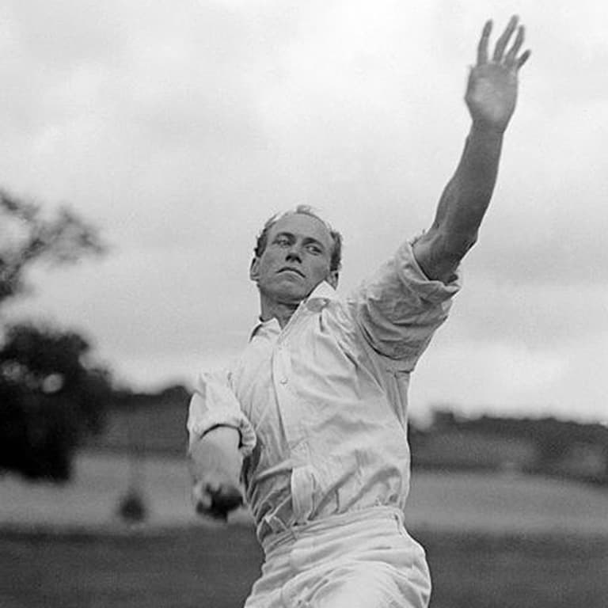

The American Over
A podcast about cricket in the USA, including Major League Cricket and the national team.

Latest episode
October 18, 2026 · 37 min
Episodes
- 06America's a Test Nation, Baby (Sort Of)Oct 18, 202637:10
- 05We Qualified!… for the QualifiersOct 13, 202629:14
- 04Is the Cricket World Cup really the World Cup?Oct 4, 202629:58
- 03Major League Cricket's Week in SoCalJul 5, 202632:42
- 02Final Over Madness!Jun 28, 202638:56
- 01MLC Week 1!Jun 21, 202633:18
About the show
We cover Major League Cricket, the national team, World Cups, and what it is actually like to follow the sport in America.
The show is hosted by friends Dhruv Gupta and Neel Mehta.